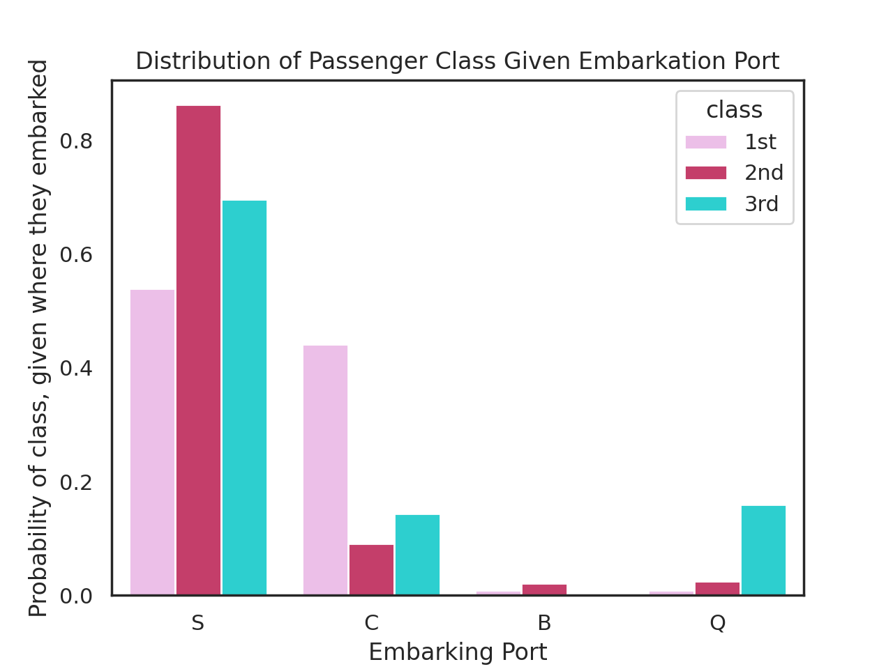

# Import the titanic dataset here
import numpy as np
import pandas as pd
data_dir = "https://dlsun.github.io/pods/data/"
df_titanic = pd.read_csv(data_dir + "titanic.csv") # this is a pandas dataframe so methods for pandas workTitanic Wrangling
In this practice activity you’ll continue to work with the titanic dataset in ways that flex what you’ve learned about both data wrangling and data visualization.
males_who_survived = df_titanic[(df_titanic["age"]<20) & (df_titanic["gender"]=="male")]
males_who_survived.head()1. Filter the data to include passengers only. Calculate the joint distribution (cross-tab) between a passenger’s class and where they embarked.
df_titanic.head()| name | gender | age | class | embarked | country | ticketno | fare | survived | type | |
|---|---|---|---|---|---|---|---|---|---|---|
| 0 | Abbing, Mr. Anthony | male | 42.0 | 3rd | S | United States | 5547.0 | 7.11 | 0 | passenger |
| 1 | Abbott, Mr. Eugene Joseph | male | 13.0 | 3rd | S | United States | 2673.0 | 20.05 | 0 | passenger |
| 2 | Abbott, Mr. Rossmore Edward | male | 16.0 | 3rd | S | United States | 2673.0 | 20.05 | 0 | passenger |
| 3 | Abbott, Mrs. Rhoda Mary 'Rosa' | female | 39.0 | 3rd | S | England | 2673.0 | 20.05 | 1 | passenger |
| 4 | Abelseth, Miss. Karen Marie | female | 16.0 | 3rd | S | Norway | 348125.0 | 7.13 | 1 | passenger |
# Code here
df_titanic["type"] = df_titanic["class"].map({ # this is creating a new column type and maping variables to passanger in the type column
"1st": "passenger",
"2nd": "passenger",
"3rd": "passenger"
})
passenger_data = df_titanic[df_titanic['type'] == 'passenger']
crosstab_result = pd.crosstab(passenger_data['class'], passenger_data['embarked'])
print(crosstab_result)
df_titanic.head()embarked B C Q S
class
1st 3 143 3 175
2nd 6 26 7 245
3rd 0 102 113 494| name | gender | age | class | embarked | country | ticketno | fare | survived | type | |
|---|---|---|---|---|---|---|---|---|---|---|
| 0 | Abbing, Mr. Anthony | male | 42.0 | 3rd | S | United States | 5547.0 | 7.11 | 0 | passenger |
| 1 | Abbott, Mr. Eugene Joseph | male | 13.0 | 3rd | S | United States | 2673.0 | 20.05 | 0 | passenger |
| 2 | Abbott, Mr. Rossmore Edward | male | 16.0 | 3rd | S | United States | 2673.0 | 20.05 | 0 | passenger |
| 3 | Abbott, Mrs. Rhoda Mary 'Rosa' | female | 39.0 | 3rd | S | England | 2673.0 | 20.05 | 1 | passenger |
| 4 | Abelseth, Miss. Karen Marie | female | 16.0 | 3rd | S | Norway | 348125.0 | 7.13 | 1 | passenger |
2. Using the joint distribution that calculated above, calculate the following:
- the conditional distribution of their class given where they embarked
- the conditional distribution of where they embarked given their class
Use the conditional distributions that you calculate to answer the following quesitons:
- What proportion of 3rd class passengers embarked at Southampton?
- What proportion of Southampton passengers were in 3rd class?
# Code 1 here
cond_dist_class_given_embarked = pd.crosstab(passenger_data['embarked'], passenger_data['class'], normalize='index') # https://pandas.pydata.org/docs/reference/api/pandas.crosstab.html
print(cond_dist_class_given_embarked)
passenger_data.groupby('embarked')['class'].value_counts() / passenger_data.groupby('embarked')['class'].count()
# so this is just like the conditional formula we learned P(A|B)
# Here we want the unique values of class from passanger data conditined on where they embarked over the totalclass 1st 2nd 3rd
embarked
B 0.333333 0.666667 0.000000
C 0.527675 0.095941 0.376384
Q 0.024390 0.056911 0.918699
S 0.191466 0.268053 0.540481embarked class
B 2nd 0.666667
1st 0.333333
C 1st 0.527675
3rd 0.376384
2nd 0.095941
Q 3rd 0.918699
2nd 0.056911
1st 0.024390
S 3rd 0.540481
2nd 0.268053
1st 0.191466
Name: class, dtype: float64# Code 2 here
cond_dist_class_given_embarked = pd.crosstab(passenger_data['embarked'], passenger_data['class'], normalize='columns') # https://pandas.pydata.org/docs/reference/api/pandas.crosstab.html
print(cond_dist_class_given_embarked)
passenger_data.groupby('class')['embarked'].value_counts() / passenger_data.groupby('class')['embarked'].count()
# Here we want the unique values of embarked given the class from passanger data over the total| class | embarked | 1st | 2nd | 3rd |
|---|---|---|---|---|
| 0 | B | 0.009259 | 0.021127 | 0.000000 |
| 1 | C | 0.441358 | 0.091549 | 0.143865 |
| 2 | Q | 0.009259 | 0.024648 | 0.159379 |
| 3 | S | 0.540123 | 0.862676 | 0.696756 |
Proportion of 3rd class passengers embarked at Southampton: 0.540481
Proportion of Southampton passengers were in 3rd class: 0.696756
# This is formatted as codes_first_class= df_titanic[(df_titanic["embarked"]=="S")& (df_titanic["class"]=="1st")]
count_1= len(s_first_class)
s_second_class= df_titanic[(df_titanic["embarked"]=="S")& (df_titanic["class"]=="2nd")]
count_2= len(s_second_class)
s_third_class= df_titanic[(df_titanic["embarked"]=="S")& (df_titanic["class"]=="3rd")]
count_3= len(s_third_class)
count_3
prop_3 = count_3/(count_1+count_2+count_3)
prop_30.5404814004376368len(passenger_data[(passenger_data["class"]=="3rd")&(passenger_data["embarked"]=="S")])/len(passenger_data[(passenger_data["embarked"]=="S")])
# here I am trying different way to subset my data to get the value I want
# so here we are trying to subset the data to find the subset of ones that are 3rd class and S embark and divide it by total of S embark0.5404814004376368len(passenger_data[(passenger_data["class"]=="3rd")&(passenger_data["embarked"]=="S")])/len(passenger_data[(passenger_data["class"]=="3rd")])
# here we do they same thing0.69675599435825113. Make a visualization showing the distribution of a passenger’s class, given where they embarked.
Discuss the pros and cons of using this visualization versus the distributions you calculated before, to answer the previous questions.
# first we need to make contigency table into a frame
df = cond_dist_class_given_embarked.reset_index()
df = df.rename(columns={"index": "Embarked"})
df# Compute the conditional distribution which we already did above
conditional_distribution = passenger_data.groupby('class')['embarked'].value_counts() / passenger_data.groupby('class')['embarked'].count()
# Now we reset the multi-index series(which only gives us rows) to a dataframe
df = conditional_distribution.reset_index(name='probability')
df
# reset_index() will turn these indices into regular columns but the new one doesn't have one so we name it
# Pivot the dataframe to get the desired format
# df_pivot = df.pivot(index='embarked', columns='class', values='probability') # index means rows in python
# df_pivot| class | embarked | probability | |
|---|---|---|---|
| 0 | 1st | S | 0.540123 |
| 1 | 1st | C | 0.441358 |
| 2 | 1st | B | 0.009259 |
| 3 | 1st | Q | 0.009259 |
| 4 | 2nd | S | 0.862676 |
| 5 | 2nd | C | 0.091549 |
| 6 | 2nd | Q | 0.024648 |
| 7 | 2nd | B | 0.021127 |
| 8 | 3rd | S | 0.696756 |
| 9 | 3rd | Q | 0.159379 |
| 10 | 3rd | C | 0.143865 |
import seaborn as sns
colors = ["#F3B8EE", "#DB2763", "#12EAEA"] # choose the colors
sns.set_palette(sns.color_palette(colors)) # this is gonna map the colors to the hue
plot = sns.barplot(data=df, x="embarked", y="probability", hue="class", ci=None)
plot.set(xlabel='Embarking Port',
ylabel='Probability of class, given where they embarked',
title='Distribution of Passenger Class Given Embarkation Port')FutureWarning:
The `ci` parameter is deprecated. Use `errorbar=None` for the same effect.
[Text(0.5, 0, 'Embarking Port'),
Text(0, 0.5, 'Probability of class, given where they embarked'),
Text(0.5, 1.0, 'Distribution of Passenger Class Given Embarkation Port')]